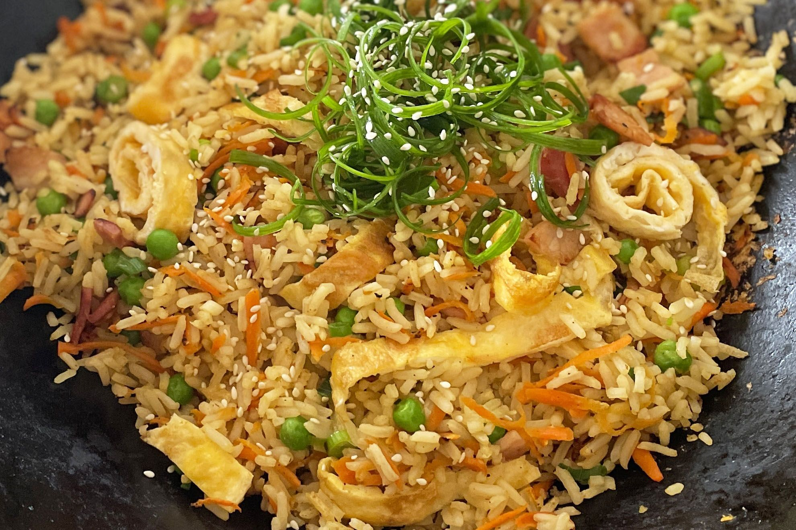

Fried Rice

Description
Fried rice is a dish of cooked rice that has been stir-fried in a wok or a frying pan and is usually mixed with
other ingredients such as eggs, vegetables, seafood, or meat. It is often eaten by itself or as an accompaniment
to another dish.
Ingredients
- 1 cup long grain white rice
- 2 tsp vegetable oil
- 2 eggs, lightly whisked
- 1 carrot, peeled and grated
- 2 shallots, trimmed, finely sliced
- 1/2 cup frozen peas, thawed
- 1 tbsp soy sauce
- Sesame seeds, to serve
- Shallots, sliced, extra, to serve
Steps To Make It
- Cook the rice in a large saucepan of boiling water for 12 minutes or until tender. Drain and leave to cool.
- Heat oil in non-stick wok or large frying pan over medium heat. Add eggs. Swirl over base to form an
omelette. Cook for 2 minutes or until set. Transfer to a chopping board. Set aside to cool slightly. Roll up
and thickly slice.
- Add carrot. Stir fry 1 minute. Add shallots, peas and rice. Cook, stirring, 3-4 minutes. Add egg and soy
sauce. Stir until heated through. Sprinkle with sesame seeds and top with extra shallots. Serve immediately.